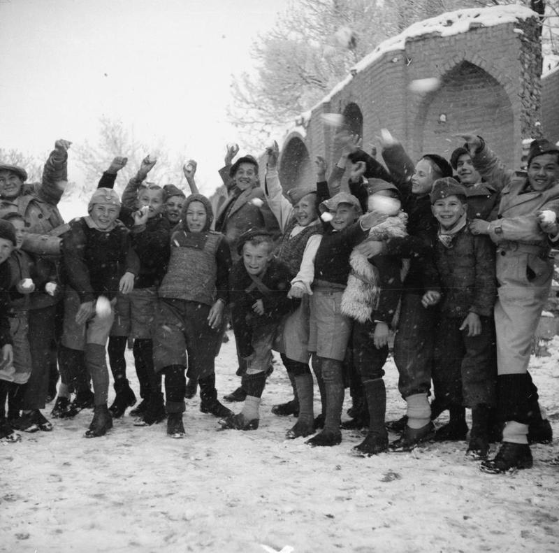

Talks & Events
Including the POLIN Museum in Warsaw, the University of Notre Dame, SAMLA, and the Hadassah-Brandeis Institute.
Photo: POLIN Museum of the History of Polish Jews, Warsaw · Wojciech Kryński · CC BY-SA 3.0 PL, cropped, via Wikimedia Commons
Lectures, papers and public events
Invited lectures, refereed conference papers, roundtables and public events in the United States and Europe.
2026
When Tehran Opened Its Doors: Iranian Hospitality and the Jewish Refugees of the Second World War
Holocaust Awareness Museum and Education Center, Philadelphia
Invited
Listening in the Aftermath: Sound, Memory, and Oblique Testimony in the Art of Boltanski, Shalev-Gerz, Sedira, and Bartana
20th- and 21st-Century French and Francophone Studies International Colloquium, University of Notre Dame
RefereedGenocide, Historical Trauma, and Survivor Testimony as Frameworks for Understanding Oppression
BASC 5300: Human Oppression, University of Connecticut
Guest lecture2025
AI, Translation, and Holocaust Memory Distortion
POLIN Museum of the History of Polish Jews, Warsaw · “Confronting Holocaust Distortion” conference, November 2025
RefereedDisorienting Knowledge: Négar Djavadi’s Philosophical Fiction at the Crossroads of Identity and Aesthetics
SAMLA, Atlanta
RefereedKnowledge After Catastrophe: Trauma, Testimony, and the Ethics of Representation
SAMLA, Atlanta · panel chair and organizer
Panel organized2024
The Art of Oblique Testimony: Anna Langfus and Christian Boltanski’s Vague Renarration of Trauma
20th/21st-Century French & Francophone Studies International Colloquium · with José Luis Falconi
RefereedRead Silence: Why and How?
Roundtable, Hadassah-Brandeis Institute
Invited2023
Rhetorics of Obliquity: The Necessity of Traumatic Representation
Department of Art, University of Connecticut
InvitedHolocaust Testimony and the Ethics of Representation
Public roundtable and screening of Claude Lanzmann: Spectres of the Shoah, University of Connecticut
Public eventAvailable for guest lectures, seminars, film discussions, and museum or public humanities programs.